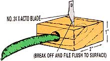

Build a better pea-sheller and thousands (well, maybe dozens) of people with raw, ragged thumbnails will beat a path to your door. Why? If you have to ask, chances are you've never spent an afternoon with a couple of bushels of peas, first running your thumb along one pod-to extricate its contents-and then another, and then another, and then another, and then another, and then another, and . . . yowch!
In pursuit of a less painful way to separate peas from pods, mankind has succeeded in producing some truly classic studies in technological inefficiency: little knives that'll cut you quicker than you can cuss . . . roller gizmos that transform tender, garden-green orbs into a pulverized mass . . . and even an electric model that costs a good deal more than you're likely to spend on seed peas in a lifetime.
But all is not lost. A good, simple, inexpensive pea-sheller does exist. And you can make one in just a few minutes for about a quarter.
First, cut a 2" block from a piece of unplaned 1 X 2 pine scrap (or any leftover lumber of reasonably similar size). Then drill a hole through the wood across the grain . . . you'll want the cavity to be slightly larger than the diameter of the peapods you'll be shelling, so choose a drill bit accordingly.
Next, clamp the block securely in a vise so that the bored ends are exposed. Using pliers to hold it, center a new No. 24 bevel-edge X-Acto blade (available at almost any hobby or hardware store for about 25 cents) on top of the block, point down and aligned with the hole, as shown in the diagram. Now, drive the blade into the wood with a few light taps from a hammer so that the point extends about an eighth of an inch into the cavity, or just far enough to cut the shell and not the peas when you push or pull a pod-convex side up-through the tunnel.
Once you have the blade's depth just right, use pliers to break the top of the cutter off, and then file down any rough edges. You might also want to cut a notch or a couple of grooves into the top of the block, so that-as you sit on the front porch methodically shelling peas and jawing with your neighbors-you won't have to look down constantly just to tell which side of the sheller is up.
And that's all there is to it. The slit made by the blade allows you to pop the peas out of their shells in nothing flat. Before you know it, you'll have a potful of produce ready for cooking or canning . . . and your thumb will still be as good as ever!
|
 |
|
|